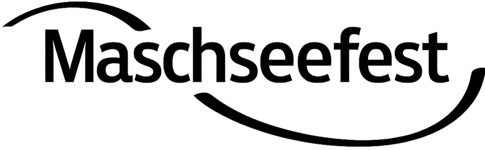
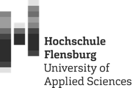

Saferspaces passt sich flexibel jedem Kontext an, steigert die Zufriedenheit eurer Besuchenden und liefert wertvolle Daten, um Sicherheits- und Awarenessstrukturen langfristig zu verbessern. Saferspaces adapts flexibly to any context, increases visitor satisfaction and delivers valuable data to improve safety and awareness structures in the long term.


BranchenIndustries
Safeguarding-Infrastruktur für Bundesliga, 2. Liga und internationale Turniere. DFB/DFL-konform.Safeguarding infrastructure for Bundesliga, 2nd division and international tournaments. DFB/DFL compliant.
Mehr erfahren →Learn more →
Von 5.000 bis 500.000 Besucher:innen. In Minuten aufgesetzt. Bewährt bei OMR, gamescom, Reeperbahn Festival.From 5,000 to 500,000 visitors. Set up in minutes. Proven at OMR, gamescom, Reeperbahn Festival.
Mehr erfahren →Learn more →
Schutzkonzepte für Stadtfeste, Kommunen und öffentliche Einrichtungen.Safety concepts for city festivals, municipalities and public institutions.
Mehr erfahren →Learn more →
Niedrigschwellige Meldewege und Schutzkonzepte für Hochschulen und Bildungseinrichtungen.Low-threshold reporting channels and safeguarding concepts for universities.
Mehr erfahren →Learn more →
Awareness-Infrastruktur für Busse, Bahnen und Haltestellen. QR-Codes an jedem Standort.Awareness infrastructure for buses, trains and stops. QR codes at every location.
Mehr erfahren →Learn more →
Awareness für Arenen, Theater, Saunen, Schwimmbäder und Kulturstätten.Awareness for arenas, theatres, spas, swimming pools and cultural venues.
Mehr erfahren →Learn more →
Hinweisgeberschutz, Compliance-Meldekanal, HR-Meldesystem. Safeguarding für Organisationen.Whistleblower protection, compliance reporting, HR reporting. Safeguarding for organisations.
Mehr erfahren →Learn more →
„Die Kooperation von saferspaces und der Landeshauptstadt Kiel ermöglicht ein sichereres Feiern und den demokratischen Zusammenhalt auf der Kieler Woche.""The cooperation between saferspaces and the city of Kiel enables safer celebrations and democratic cohesion at Kieler Woche."
„Durch die Nutzung werden wir unnötige Zeitverluste bei der Standortbestimmung des Notfalls durch Funkstörungen, nicht verständliche Durchsagen usw. verhindern und somit den Hilfestandard im Stadion erhöhen.""By using the system, we will prevent unnecessary time losses in locating emergencies due to radio interference, incomprehensible announcements etc. and thus raise the standard of help in the stadium."
„Wir haben den Eindruck, dass unser Publikum, durch die Ansprache und Nutzen der App, direkt mehr aufeinander acht gibt.""We have the impression that our audience, through the communication and use of the app, directly looks out for each other more."

„Die Personen, die die Codes nutzen, um Hilfe zu bekommen, waren überrascht, wie schnell und zuverlässig dann auch Hilfe vor Ort war.""The people who used the codes to get help were surprised at how quickly and reliably help arrived on site."
„Für uns ist die Zusammenarbeit sehr wertvoll. Saferspaces bietet unseren Besucher*innen einen sicheren und niedrigschwelligen Kommunikationsweg von jedem Standort.""The collaboration is very valuable to us. Saferspaces offers our visitors a safe and low-threshold communication channel from any location."
und als nächstes?What's next?
Viele Gespräche laufen bereits – hier sind die Branchen, in denen wir die nächsten, wichtigen Schritte gehen möchten. Seid Pioniere und die ersten in einer der folgenden Branchen.Many conversations are already underway – here are the industries where we want to take the next important steps. Be pioneers and the first in one of the following industries.
In einer persönlichen Demo zeigen wir euch, wie saferspaces in eurem Kontext funktioniert – und welche Erkenntnisse ihr vom ersten Einsatz an gewinnt. In a personal demo, we'll show you how saferspaces works in your context – and what insights you gain from the very first deployment.
Demo buchenBook Demo